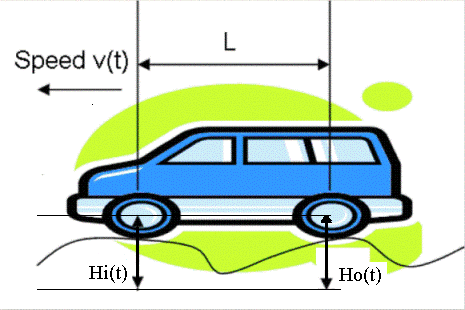
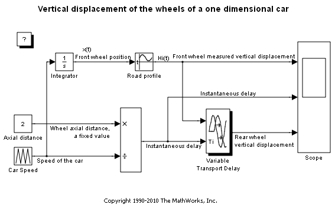
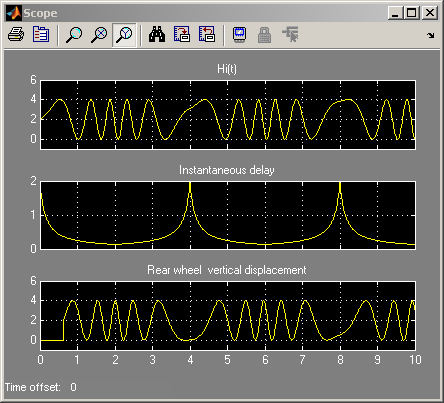
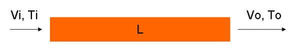
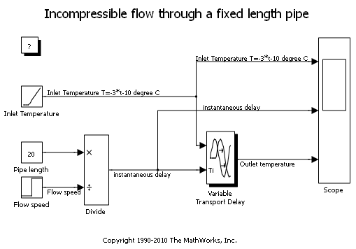
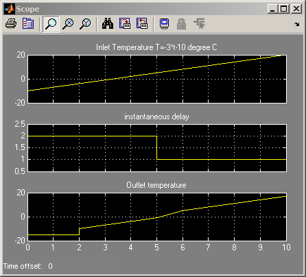

Simulating Systems with Variable Transport Delay Phenomena
This demo shows two examples of how you can use Simulink® to model variable transport delay phenomena.
Contents
Vertical Wheel Displacement on a One-Dimensional Car

Figure 1: Illustration of a car with speed v(t).
A car is running along a road with speed v(t). A sensor is installed at the front wheel to measure the vertical displacement Hi(t) of the front wheel caused by the road profile. If the wheels and road never lose contact, then the vertical displacement of the rear wheel, Ho(t), can be seen as a variable transport delay of Hi(t), which is determined by the length L between the two wheels and the speed v(t).
 Figure 2: Vertical displacement of the wheels.
Incompressible Flow Through a Fixed Length Pipe

Figure 3: Illustration of a fixed-length pipe.
An incompressible flow goes through a pipe of length L with speed v(t). At the inlet, the flow temperature is Ti. We can model the temperature at the outlet To as a variable transport delay of Ti. At time t=0, the pipe is empty and until t=2, there is no flow at the outlet. Thus, the output temperature before t=2 is the initial output temperature.
 Figure 4: Incompressible flow through a fixed-length pipe.